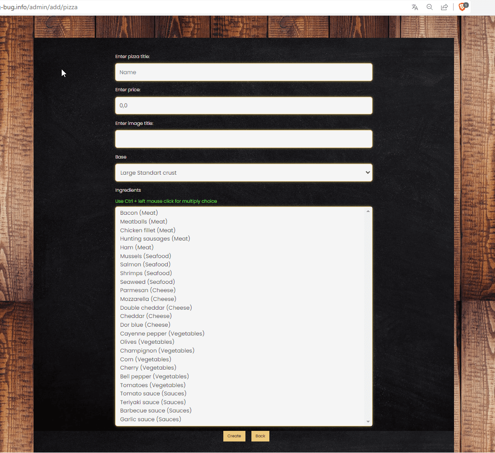
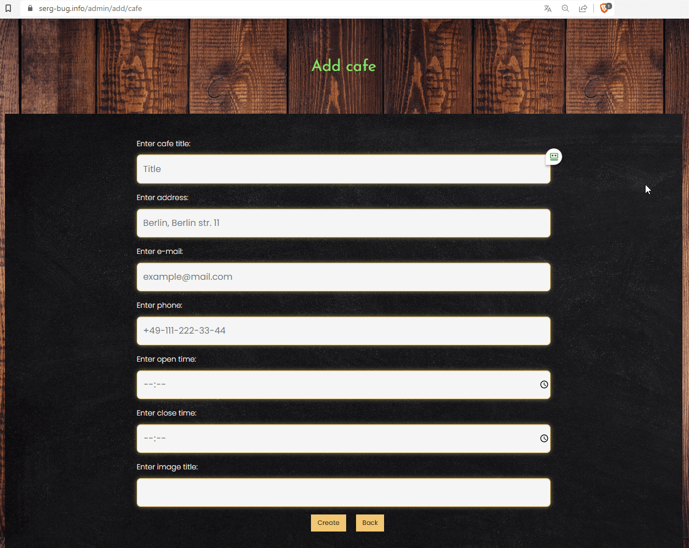

Package balu.pizza.webapp.controllers
Class AdminController
java.lang.Object
balu.pizza.webapp.controllers.AdminController
Administrator controller
This functionality is only available to administrators
-
Constructor Summary
ConstructorsConstructorDescriptionAdminController(UserUtil userUtil, TypeService typeService, IngredientService ingredientService, BaseService baseService, PizzaService pizzaService, CafeService cafeService, IngredientValidator ingredientValidator, TypeValidator typeValidator, BaseValidator baseValidator, PizzaValidator pizzaValidator) -
Method Summary
Modifier and TypeMethodDescriptionCreating a new type of ingredientCreating a new cafeaddIngredient(org.springframework.ui.Model model, Ingredient ingredient, TypeIngredient typeIngredient) Add ingredient pageaddPizza(Pizza pizza, Base base, Ingredient ingredient, org.springframework.ui.Model model) Creating a new pizzaaddTypeIngredient(TypeIngredient type, org.springframework.ui.Model model) Creating a new type of ingredientchoiceBase(Base base, org.springframework.ui.Model model) generating a page for selecting the base to be editedchoiceIngredient(org.springframework.ui.Model model) Generating a page for selecting the ingredient to be editedchoiceTypeForEdit(TypeIngredient type, org.springframework.ui.Model model) generating a page for selecting the type of ingredient to be editedcreateBase(@Valid Base base, org.springframework.validation.BindingResult bindingResult, org.springframework.ui.Model model) Validating and writing to the database of the created basecreateCafe(@Valid Cafe cafe, org.springframework.validation.BindingResult bindingResult, org.springframework.ui.Model model) Validating and writing to the database of the created cafecreateIngredient(@Valid Ingredient ingredient, org.springframework.validation.BindingResult bindingResult, TypeIngredient typeIngredient, org.springframework.ui.Model model) Validating and writing to the database of the created ingredientcreateType(@Valid TypeIngredient type, org.springframework.validation.BindingResult bindingResult, org.springframework.ui.Model model) Validating and writing to the database of the created type ingredientcreatPizza(@Valid Pizza pizza, org.springframework.validation.BindingResult bindingResult, org.springframework.ui.Model model) Validating and writing to the database of the created pizzaPage with base edit formeditCafePage(int cafeId, org.springframework.ui.Model model, Cafe cafe) Page with cafe edit formeditIngredient(int ingrId, org.springframework.ui.Model model) Page with pizza edit formeditPizza(int pizzaId, org.springframework.ui.Model model) Page with pizza edit formeditType(TypeIngredient type, org.springframework.ui.Model model) Page with type edit formindexAdmin(org.springframework.ui.Model model) Admin PanelselectCafeForEdit(org.springframework.ui.Model model) Generating a page for selecting the cafe to be editedselectPizzaForEdit(org.springframework.ui.Model model) Generating a page for selecting the pizza to be editedupdateBase(@Valid Base base, org.springframework.validation.BindingResult bindingResult, int baseId, org.springframework.ui.Model model) Validating and writing to the database of the updated baseupdateCafe(@Valid Cafe cafe, org.springframework.validation.BindingResult bindingResult, org.springframework.ui.Model model, int cafeId) Validating and writing to the database of the updated cafeupdateIngredient(@Valid Ingredient ingredient, org.springframework.validation.BindingResult bindingResult, org.springframework.ui.Model model, int ingrId) Validating and writing to the database of the updated ingredientupdatePizza(@Valid Pizza pizza, org.springframework.validation.BindingResult bindingResult, org.springframework.ui.Model model, int pizzaId) Validating and writing to the database of the updated pizzaupdateType(@Valid TypeIngredient type, org.springframework.validation.BindingResult bindingResult, org.springframework.ui.Model model, int typeId) Validating and writing to the database of the updated type
-
Constructor Details
-
AdminController
@Autowired public AdminController(UserUtil userUtil, TypeService typeService, IngredientService ingredientService, BaseService baseService, PizzaService pizzaService, CafeService cafeService, IngredientValidator ingredientValidator, TypeValidator typeValidator, BaseValidator baseValidator, PizzaValidator pizzaValidator) - Parameters:
userUtil- Set of utilitiestypeService- Ingredient type serviceingredientService- Ingredient servicebaseService- Base of pizza servicepizzaService- Pizza servicecafeService- Cafe serviceingredientValidator- Validator for ingredient data entrytypeValidator- Validator for type ingredient data entrybaseValidator- Validator for base data entrypizzaValidator- Validator for pizza data entry
-
-
Method Details
-
indexAdmin
Admin Panel
- Parameters:
model-- Returns:
- generates a page for the route /admin
-
addIngredient
@GetMapping("/add/ingredient") public String addIngredient(org.springframework.ui.Model model, @ModelAttribute("ingredient") Ingredient ingredient, @ModelAttribute("type") TypeIngredient typeIngredient) Add ingredient page- Parameters:
model-ingredient-typeIngredient-- Returns:
- generates a page for the route /admin/add/ingredient
-
createIngredient
@PostMapping("/add/ingredient") public String createIngredient(@ModelAttribute("ingredient") @Valid @Valid Ingredient ingredient, org.springframework.validation.BindingResult bindingResult, @ModelAttribute("type") TypeIngredient typeIngredient, org.springframework.ui.Model model) Validating and writing to the database of the created ingredient- Parameters:
ingredient-bindingResult-typeIngredient-model-- Returns:
- redirect to the admin panel page
-
addTypeIngredient
@GetMapping("/add/type_ingredient") public String addTypeIngredient(@ModelAttribute("type") TypeIngredient type, org.springframework.ui.Model model) Creating a new type of ingredient- Parameters:
type-model-- Returns:
- generates a page for the route /admin/add/type_ingredient
-
createType
@PostMapping("/add/type_ingredient") public String createType(@ModelAttribute("type") @Valid @Valid TypeIngredient type, org.springframework.validation.BindingResult bindingResult, org.springframework.ui.Model model) Validating and writing to the database of the created type ingredient- Parameters:
type-bindingResult-model-- Returns:
- redirect to the admin panel page
-
addBase
@GetMapping("/add/base") public String addBase(@ModelAttribute("base") Base base, org.springframework.ui.Model model) Creating a new type of ingredient- Parameters:
base-model-- Returns:
- generates a page for the route /admin/add/base
-
createBase
@PostMapping("add/base") public String createBase(@ModelAttribute("base") @Valid @Valid Base base, org.springframework.validation.BindingResult bindingResult, org.springframework.ui.Model model) Validating and writing to the database of the created base- Parameters:
base-bindingResult-model-- Returns:
- redirect to the admin panel page
-
choiceTypeForEdit
@GetMapping("edit/type") public String choiceTypeForEdit(@ModelAttribute("type") TypeIngredient type, org.springframework.ui.Model model) generating a page for selecting the type of ingredient to be edited- Parameters:
type-model-- Returns:
- generates a page for the route /admin/edit/type
-
editType
@PostMapping("edit/type") public String editType(@ModelAttribute("type") TypeIngredient type, org.springframework.ui.Model model) Page with type edit form- Parameters:
type-model-- Returns:
- sends a request to change the data
-
updateType
@PatchMapping("edit/type/{id}") public String updateType(@ModelAttribute("type") @Valid @Valid TypeIngredient type, org.springframework.validation.BindingResult bindingResult, org.springframework.ui.Model model, @PathVariable("id") int typeId) Validating and writing to the database of the updated type- Parameters:
type-bindingResult-model-typeId-- Returns:
- redirect to the admin panel page
-
choiceBase
@GetMapping("base/edit") public String choiceBase(@ModelAttribute("base") Base base, org.springframework.ui.Model model) generating a page for selecting the base to be edited- Parameters:
base-model-- Returns:
- generates a page for the route /admin/base/edit
-
editBase
@PostMapping("base/edit") public String editBase(@ModelAttribute("base") Base base, org.springframework.ui.Model model) Page with base edit form- Parameters:
base-model-- Returns:
- sends a request to change the data
-
updateBase
@PatchMapping("base/edit/{id}") public String updateBase(@ModelAttribute("base") @Valid @Valid Base base, org.springframework.validation.BindingResult bindingResult, @PathVariable("id") int baseId, org.springframework.ui.Model model) Validating and writing to the database of the updated base- Parameters:
base-bindingResult-baseId-model-- Returns:
- redirect to the admin panel page
-
addPizza
@GetMapping("/add/pizza") public String addPizza(@ModelAttribute("pizza") Pizza pizza, @ModelAttribute("base") Base base, @ModelAttribute("ingredient") Ingredient ingredient, org.springframework.ui.Model model) Creating a new pizza
- Parameters:
pizza-base-ingredient-model-- Returns:
- generates a page for the route /admin/add/pizza
-
creatPizza
@PostMapping("/add/pizza") public String creatPizza(@ModelAttribute("pizza") @Valid @Valid Pizza pizza, org.springframework.validation.BindingResult bindingResult, org.springframework.ui.Model model) Validating and writing to the database of the created pizza- Parameters:
pizza-bindingResult-model-- Returns:
- If successful redirect to admin panel page
-
selectPizzaForEdit
Generating a page for selecting the pizza to be edited- Parameters:
model-- Returns:
- Generates a page for the route /admin/edit/pizza
-
editPizza
@GetMapping("/edit/pizza/{id}") public String editPizza(@PathVariable("id") int pizzaId, org.springframework.ui.Model model) Page with pizza edit form- Parameters:
pizzaId-model-- Returns:
- sends a request to change the data
-
updatePizza
@PatchMapping("/edit/pizza/{id}") public String updatePizza(@ModelAttribute("pizza") @Valid @Valid Pizza pizza, org.springframework.validation.BindingResult bindingResult, org.springframework.ui.Model model, @PathVariable("id") int pizzaId) Validating and writing to the database of the updated pizza- Parameters:
pizza-bindingResult-model-pizzaId-- Returns:
- If successful redirect to admin panel page
-
choiceIngredient
Generating a page for selecting the ingredient to be edited- Parameters:
model-- Returns:
- Generates a page for the route /admin/edit/ingredient
-
editIngredient
@GetMapping("edit/ingredient/{id}") public String editIngredient(@PathVariable("id") int ingrId, org.springframework.ui.Model model) Page with pizza edit form- Parameters:
ingrId-model-- Returns:
- sends a request to change the data
-
updateIngredient
@PatchMapping("edit/ingredient/{id}") public String updateIngredient(@ModelAttribute("ingredient") @Valid @Valid Ingredient ingredient, org.springframework.validation.BindingResult bindingResult, org.springframework.ui.Model model, @PathVariable("id") int ingrId) Validating and writing to the database of the updated ingredient- Parameters:
ingredient-bindingResult-model-ingrId-- Returns:
- If successful redirect to admin panel page
-
addCafe
@GetMapping("/add/cafe") public String addCafe(@ModelAttribute("cafe") Cafe cafe, org.springframework.ui.Model model) Creating a new cafe
- Parameters:
cafe-model-- Returns:
- generates a page for the route /admin/add/cafe
-
createCafe
@PostMapping("/add/cafe") public String createCafe(@ModelAttribute("cafe") @Valid @Valid Cafe cafe, org.springframework.validation.BindingResult bindingResult, org.springframework.ui.Model model) Validating and writing to the database of the created cafe- Parameters:
cafe-bindingResult-model-- Returns:
- If successful redirect to admin panel page
-
selectCafeForEdit
Generating a page for selecting the cafe to be edited- Parameters:
model-- Returns:
- Generates a page for the route /admin/edit/ingredient
-
editCafePage
@GetMapping("/edit/cafe/{id}") public String editCafePage(@PathVariable("id") int cafeId, org.springframework.ui.Model model, @ModelAttribute("cafe") Cafe cafe) Page with cafe edit form- Parameters:
cafeId-model-cafe-- Returns:
- sends a request to change the data
-
updateCafe
@PatchMapping("/edit/cafe/{id}") public String updateCafe(@ModelAttribute("cafe") @Valid @Valid Cafe cafe, org.springframework.validation.BindingResult bindingResult, org.springframework.ui.Model model, @PathVariable("id") int cafeId) Validating and writing to the database of the updated cafe- Parameters:
cafe-bindingResult-model-cafeId-- Returns:
- If successful redirect to admin panel page
-